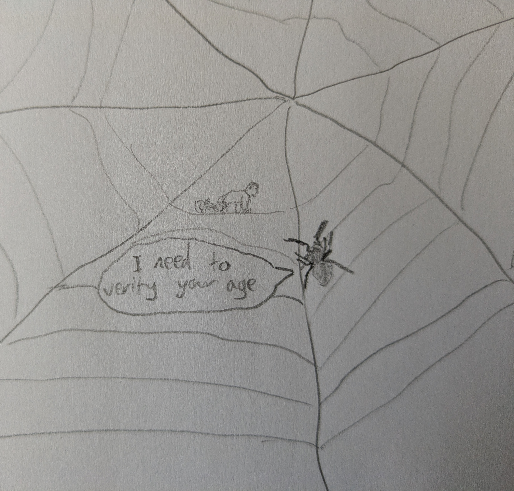

Web Wanderings 1: A Few Cool Pages I've Found

The Online Safety Act in action.
We're living in Interesting Times. This is hardly news, but it's at the forefront of my mind. The UK government seems intent on hiding everything even slightly controversial (far from being just porn, anything 'mature' can be age gated – including news about the Israel-Gaza conflict, for example) from its citizens unless they're happy to send their IDs or biometric data to American companies. They're calling people who oppose this paedophiles and just ignoring the fact that the Online Safety Act only serves to push horny teenagers from large, regulated porn sites to dodgy cess pits that will never comply with the regulations. They aren't protecting the children at all; they're nudging a toe over the authoritarian line and distracting us with 'Protect the Children' gesture politics. Also worth noting that the OSA measures can be totally sidestepped with the use of a VPN. They are achieving nothing other than a reduction of our rights to privacy and free expression. I sincerely regret voting for these people.
Clearly, this irks me. I'm trying not to be too obsessive about it, trying to avoid becoming impossible to live with. There's always plenty to be pissed off about, and I am guilty of spending a little too much time in that mindset. So, as something of a balm for my weary soul, I decided to set off in search of some pleasant distractions on the web.
Here's what I found.
- Cybercultural: What the Internet Was Like in 1998
As you can probably tell from my web design choices, I'm a big fan of the old web. This is a thorough look back at a fascinating time in the history of the web. 1998 is actually before we got an internet connection at home (and I'd have been too young to use it anyway; I was 7) but many of the product and company names are familiar to me. It's nice to indulge in a little nostalgia and gaze back on a simpler, more rose-tinted internet.
- Zonelets
Zonelets is a simple blogging engine for static sites. It's particularly targeted at hobbyists/enthusiasts and essentially just provides a little guidance and some basic premade bits and bobs to get a site online. I'm a big fan of anything that makes building a personal site/blog more accessible, and Zonelets does that while also gently pushing the user towards learning a little about how websites work. There are a few reasons I prefer static pages to CMS-based blogs like WordPress, mostly the fact they're lighter on resources and more secure, so having something out there aimed explicitly at non-professionals like myself is a win. I don't have need of it myself since I'm currently rawdogging the html and CSS for both my websites, but I'm glad it exists.
Note to self: never, under any circumstance, use the phrase 'rawdogging' again.)
- Weird Wiltshire: The Mysterious Lights at Golden Ball Hill
Very little tickles the back of my brain like reading about strange lights in the sky and ghost stories. Regardless of whether you believe in aliens or paranormal phenomena, these stories tell us something interesting about the human condition and about the particular people experiencing strange things. Within this post, I'm particularly fond of the bit about Rudloe Manor. I've come across the name before but what's offered here has convinced me I'll need to do a proper deep dive and send myself entirely mad with conspiracy theories.
- Malware Tech: Every Reason Why I Hate AI and You Should TooIn this post, Marcus Hutchins (who's a very clever guy and incredibly interesting if you have even the slightest interest in cybersecurity) walks us through his evaluation of the current state of generative AI. I'm broadly sympathetic to his points and trust his judgement on this. When it comes to AI (all tech stuff, really), I'm an interested layman and so I depend on knowledgeable subject matter experts to keep me informed.
I'm not an anti-AI ideologue, though. I think that focused, task-specific models are incredible. The issue I have with the current hype cycle is that it involves fooling the general public into thinking that all innovations produced by any machine learning model are attributable to transformer-based LLMs like ChatGPT. It isn't the chatbots solving protein folding or discovering new drugs. But I digress.
- Down the Ladder: my rejected application to the onion
I'll finish with this one for a simple reason: it's just straight funny. The list of possible Onion headlines has some real gems. I'm particularly fond of the one about the stoic. There's also a couple of short sample articles and the true crime one is outstanding.
I think that'll do for now. Spending a little time compiling this list has brought me some joy and I hope reading it does the same for you.
Toodles,
--Antony F.